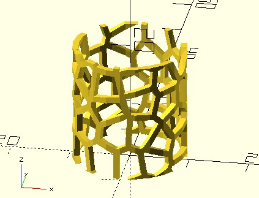
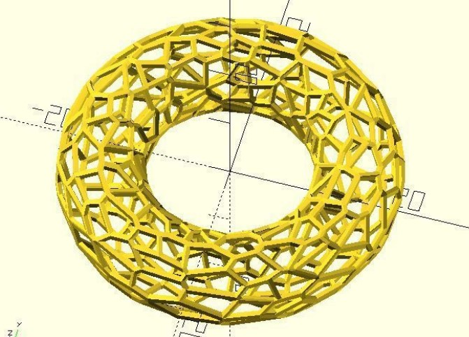

半平面交集
April 4, 2022透過〈Worley 雜訊〉可以畫出 Voronoi 圖形，只不過代價是昂貴的運算，因為使用了全部的像素來運算，透過 CPU 來做這類運算相當吃力，因而 Worley 雜訊通常是應用 GPU 著色器的撰寫上。
半平面交集
可以透過幾何運算來求得 Voronoi 圖形，最易於理解的是半平面交集（Half-plane intersection），因為就是從勢力範圍的觀點來求 Voronoi 圖形。
例如，若一開始有兩個點，兩個點的中垂線畫出了兩者的勢力範圍：

現在將藍色點與另一個空間中的點也畫出勢力範圍，那麼藍色點可以擁有的勢力範圍，就是前一個勢力範圍與目前勢力範圍的交集：

重複相同步驟，藍色點與更多的點求得勢力範圍，並取得勢力範圍交集，直到全部的點都處理過為止。例如，有五個點的話，最後藍色點求得的勢力範圍就是下圖的紅色區域：
對於另外四個點，也可以重複以上的步驟，在每個點的勢力範圍交集都求得後，就會得到 Voronoi 圖形：

vrn2_space 函式
半平面交集法概念簡單，然而與〈Worley 雜訊〉有著類似的缺點，每個細胞要與其他全部細胞進行半平面交集的話，還是會付出不必要的運算，因為過遠的細胞，實際上對勢力的決定沒有影響；若要改進這個問題，方式之一是採取與〈網格 Worley 雜訊〉類似的做法，僅取九宮格鄰居進行比較。
dotSCAD 的 vrn2_space 實現了基於網格、九宮格鄰居的半平面交集，交集時使用原生的 intersection 模組，在建立大量的細胞時，也能有不錯的效能表現：
use <voronoi/vrn2_space.scad>
vrn2_space(
size = [200, 100],
grid_w = 5
);
vrn2_space 建立的 Voronoi，上下可以接合，左右可以接合，透過適當的變換，就可以構造出不同的模型，例如：
use <bend_extrude.scad>
use <voronoi/vrn2_space.scad>
size = [60, 20];
bend_extrude(size = size, thickness = 1, angle = 360)
difference() {
square(size);
vrn2_space(
size = size,
grid_w = 5,
seed = 1
);
}
bend_extrude 模組，可以依指定的角度，將 2D 子模組彎曲為圓弧，結果就是建立了圓柱形的 Voronoi：

vrn2_cells_space 函式
vrn2_space 使用了內建的 intersection 實作，因此你無法取得每個細胞的資料，想進行進一步變換時會受到限制，這時可以使用 vrn2_cells_space 函式，這是我自行實現交集的版本，它會傳回一組細胞的資料，每個細胞資料包含了細胞核座標以及代表多邊形的一組點。例如：
use <polyline_join.scad>
use <voronoi/vrn2_cells_space.scad>
size = [20, 20];
grid_w = 5;
cells = vrn2_cells_space(size, grid_w);
for(cell = cells) {
cell_pt = cell[0]; // 細胞核座標
cell_poly = cell[1]; // 代表多邊形的一組點
// 畫邊
linear_extrude(1)
polyline_join([each cell_poly, cell_poly[0]])
circle(.5);
// 擠出細胞並著色
color(rands(0, 1, 3))
translate(cell_pt)
linear_extrude(2, scale = 0.8)
translate(-cell_pt)
polygon(cell_poly);
}
這會構成以下的圖形：
進一步地，你還可以建立一個環形的 Voronoi，自己試試看吧！

半空間交集？
半平面法交集可以擴展為半空間交集，也可以進一步只處理鄰近的 27 個細胞來實作，不過還是很慢，dotSCAD 的 vrn3_space 模組，使用了內建的 intersection 來實現：
use <voronoi/vrn3_space.scad>
vrn3_space(
size = [20, 15, 10],
grid_w = 5
);
速度上沒有好的表現，只能說是勉強堪用：
如果你想什麼都在 OpenSCAD 完成，vrn3_space 是選項之一，如果不想這麼笨重的方案，那麼可以試著使用其他語言的方案，例如 Python 的 SciPy，它的 sptial 提供了 Voronoi 函式，可以建立 2D/3D 的 Voronoi，這可以參考〈Voronoi 2D/3D〉，其中結合了 CadQuery 來建立模型。